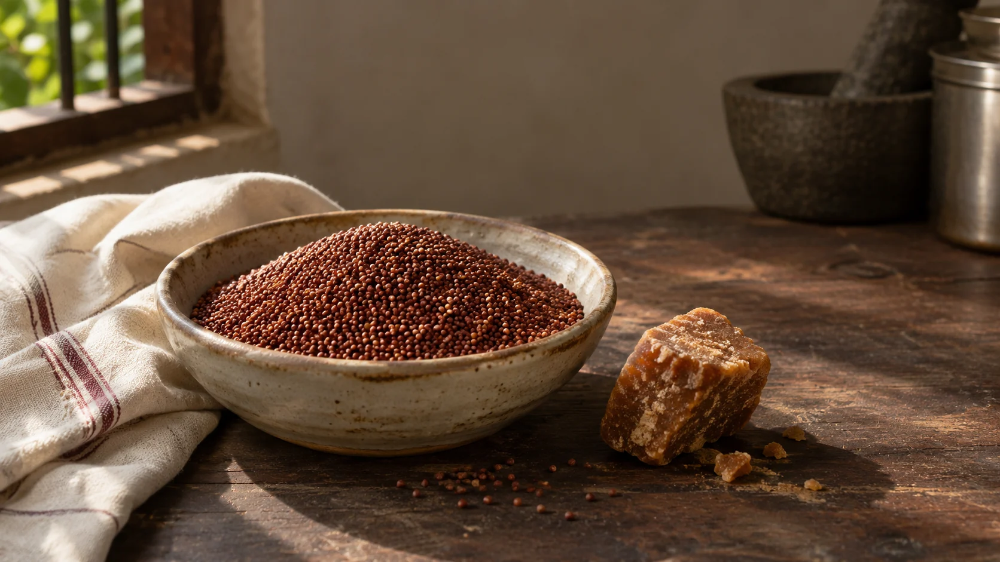

VS ORGANICS / EVERYDAY GROCERIES
Good food starts
with the everyday.
Familiar grains, millets and pantry staples for the meals you make at home.

Loading the pantry…
VS ORGANICS / EVERYDAY GROCERIES
Familiar grains, millets and pantry staples for the meals you make at home.

Loading the pantry…